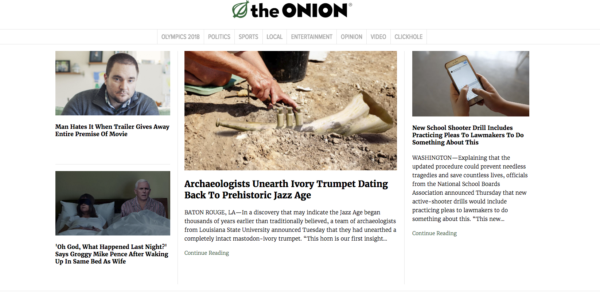

Short Introduction to Django
What is Django?


...he talked about how Django needed a mascot. One that was awesome and had magical powers...
...Since the pony seems to have much historical significance within the Django project, I give you the logo for “the web framework for ponies with magical powers." Django is now awesome!-- Bryan Veloso's post about the pony mascot image.
What is Django? TL;DR Version
- Developed by Adrian Holovaty & Jacob Kaplan-Moss
- Created in 2003
- Open Sourced in 2005


The framework is named after Adrian's favorite guitarist, Django Reinhardt, the "Three fingered lightning"

What is Django?
Laravel(PHP)

Ruby on Rails(Ruby)

Play Framework(Java)
Express(Javascript/NodeJS)
Why Django?
Why Django?
How do people evaluate frameworks?
- Popularity
- Documentation
- Out of the boxiness
- Security and Stability
- Extensibility
- Open Source and Community
Why Django?
Django jobs are rising
Popularity doesn't mean it is technically the best.
It does mean that you will find more resources on it, making it easier to learn
It also means that it just won't suddenly just disappear one day.

Why Django?
There are many projects that provide great features but their documentation is terribad.
If users cannot find a way to use a feature or solve issues with a project, they will most likely abandon it.

Why Django?
It aims to automate the overhead associated with common activities performed in web development.
- Database Access using ORM
- Automatic Admin Interface<
- Regex-based URL Design
- Templating
- Session Management
- Authentication and Authorization systems
Why Django?
Why Django?
Django has loads and loads of premade packages, ready to install
Why Django?
Where do some new web developers come from?
- Web designers joining in from the dark side
- Students finding their way into the industry
- Enthusiasts and business owners looking to scratch their own itch
These people usually won't want to invest lots of money upfront.

Being open source means that there is a community behind the project.
Which sites use Django?
Which sites use Django?
Disqus

Bitbucket


Mozilla Firefox


NASA

The Onion
The Washington Post

EventBrite

Resources
References/Issues
Documentation
StackOverflow
Packages/Libraries
Awesome Django
Local Communities
Syntactics Pink
Django Girls CDO
Pytsada